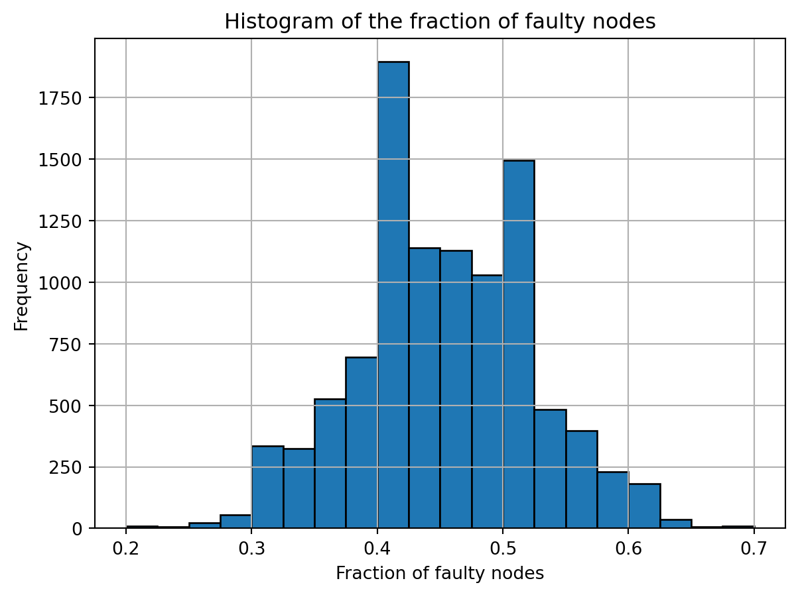

In this chapter we study a second type of consensus protocols, those based on blockchains and in particular the concept of longest chains. This type of consensus protocol lies at the heart of several cryptocurrencies (e.g. Bitcoin). The Bitcoin protocol is one example of a longest-chain protocol, but it is not the only one. In fact, most cryptocurrencies are based on blockchain protocols, see for example the long list on Wikipedia here. All of these protocols follow the same general recipe, but they use different ingredients in certain steps. In this chapter we focus on the general recipe, in the next we will see some of the ingredients that Bitcoin uses (namely proof of work).
To simplify the exposition, we will work in the permissioned setting, assuming PKI, and especially the synchronous model of communication. If we restrict to that setting however, then we already know a good consensus protocol! Indeed, this is precisely what we achieved in the previous chapter. So what is the advantage of doing it again? There are several answers to this question. First, the consensus protocol based on Dolev-Strong is rather slow. It requires many rounds of cross-checking before new information gets added to the local history of each of the nodes. A second answer is that the Dolev-Strong protocol relies on the permissioned setting, whereas the protocol that we design in this chapter extends very naturally to the permissionless setting. We will go into this in more detail at the end of this chapter.
We start this chapter with a high-level description of a blockchain protocol and the behavior of honest nodes. As usual, we then explicitly state the assumptions that we make in this chapter. We will see that the notion of consensus trivially holds (under the assumptions that we make). Instead, we introduce a new notion – finality – that is harder to achieve, but very useful in a cryptocurrency application! In a nutshell, a block is final when it is ‘deep enough in the chain’. We will formalize this later on in the chapter, for now the picture to have in mind is that a block that is final can no longer be changed (surprise); if we imagine the block to contain a transaction, we can thus trust that this transaction actually took place. We spend the second half of this chapter to prove that longest-chain protocols achieve finality when, roughly speaking, the majority of the nodes is honest.
5.1 Protocol description
The starting point for a blockchain protocol is the concept of a blockchain. As the name suggests, a blockchain is a set of blocks that are connected to form a chain. What do we mean by a chain? We say that a set of blocks forms a chain if:
There is one “genesis” block, forming the start of the chain, we typically denote it with B_0,
Every block that is not B_0 points to exactly one other block as its predecessor, in such a way that if we follow the chain of predecessors, we arrive at the genesis block B_0.
The above is a somewhat convoluted way of saying that a blockchain looks like Figure 9.1. It is a directed graph where each node has out-degree 1,1 except for a single out-degree 0 block B_0. It moreover has the property that every block is connected to B_0 by a directed path. As a graph, a blockchain is thus a directed tree whose root is the block B_0. If you are not familiar with directed graphs, but you are familiar with undirected graphs, then it suffices to think of a blockchain simply as a tree whose root is the block B_0. The direction of the arcs is the one that follows the path towards B_0.
A blockchain is a directed graph G that is an in-tree whose root corresponds to B_0.2
Figure 5.1: A chain of blocks
The purpose of a blockchain is again to contain information. By this we mean that every block represents a chunk of information (say a 1MB file). By storing the information in a chain, we construct a notion of time: the information in a block is created after that of its predecessor. Needless to say, this is a useful property to have when you want to keep track of a list of transactions.
So how does a blockchain fit in the distributed computing framework? We want to think of the blockchain as the information that all nodes have access to. This describes the ideal scenario. If we assume it, then consistency becomes trivial. Such an assumption however essentially amounts to instantaneous communication. We will formalize the assumptions that we work with in the next section.
Now that we have cleared up the concept of a blockchain, we sketch the protocol that we have in mind.
A blockchain protocol:1. Initialize with a hard-coded genesis block B02. In each round r = 1,2,3,.... do: a) Choose one node i as the leader of round r. b) Node i proposes a set of blocks, each specifying a single predecessor block.
This protocol is under-specified: we will fill in the details of step 2 later. In particular, one can imagine several different ways of choosing a leader in step 2a), for example:
In the permissioned setting that we used in the previous chapter, we simply select node i as leader in rounds i, n+i, 2n+i,....
In a Proof of Work protocol (which we will discuss in the next chapter), the leader in round r is the first node to provide a proof of work after round r+1.
Proof of Stake is another way to select leaders.
For the moment, either one of these three options is good to have in mind. In the second half of the chapter we prove correctness of the longest-chain protocol under certain assumptions. At that point, you are recommended to revisit the above three options and see whether or not they match the assumptions. We do want to point out that the second option already hints at the fact that rounds don’t have to correspond to time slots, they rather refer to the periods in between certain events. We will come back to this later.
5.1.1 Honest vs. dishonest behavior
Let us now describe the intended behavior of honest nodes. In a longest-chain protocol an honest node will do the following when it is elected as the leader of a round r:
it proposes exactly one new block,
this new block points to exactly one predecessor,
the predecessor was created in a previous round,
Naturally, the new block may contain some information. For example, a list of newly made transactions or a copy of your favorite recipe for pasta. However, for this chapter we will ignore such information: that information is relevant for applications, but not for the guarantees that we want to achieve here. All that matters for us is that a block contains a pointer to precisely one predecessor that was created in a previous round.
In a longest-chain protocol, there is one additional requirement on the behavior of honest nodes:
the new block extends a longest chain.
We should of course define what we mean by a longest chain. A longest chain in a blockchain refers to a sequence of blocks that are on a longest path in the blockchain. Let us revisit the example from Figure 9.1. We will label the blocks for ease of reference; the particular labels that we use are not important. In a blockchain we typically assume that a block is signed by its creator and this signature can be used as a label (it includes sufficient identifying information such as the name of creator, time of creation, predecessor,…).
Figure 5.2: A labelled blockchain
In this example, we see three distinct (maximal) paths.3 There is the path B_0 \leftarrow B_1 \leftarrow B_4 which contains three blocks. The path B_0 \leftarrow B_2 \leftarrow B_3 \leftarrow B_6 \leftarrow B_7 contains five blocks. Finally, there is also the path B_0 \leftarrow B_2 \leftarrow B_5 which contains three blocks. In this example, the path containing 5 blocks is the longest. This path would thus be referred to as the longest chain. An honest node in this example would thus create a new block, say B_8, that points to B_7 as its predecessor.
In the above example, there is a unique longest path, which means the honest node does not have to make a choice: its new block has to point to B_7. This does not have to be the case however. In the example below, there are two maximal paths, both containing exactly three blocks (namely B_0 \leftarrow B_1 \leftarrow B_4 and B_0 \leftarrow B_2 \leftarrow B_3). Either of the two paths would be a longest chain in this example. This is the reason that we ask honest nodes to extend a longest chain and not the longest chain. When there are several longest chains, honest nodes may break ties in an arbitrary (but fixed) way.
Figure 5.3: A labelled blockchain with 2 longest chains
We have now described the intended behavior of honest nodes. What about nodes that are dishonest or faulty? As usual, we make no assumptions whatsoever about their behavior. After all, a node is called faulty whenever it deviates from the intended protocol (no matter the reason or the manner in which deviates). There is however something we can say. Since the intended behavior is that a new block specifies exactly one predecessor, the honest nodes can always disregard any blocks that specify 0 or at least 2 predecessors. We can therefore assume that a block created by a faulty node also specifies exactly one predecessor which moreover comes from a previous round.
Looking ahead, let’s think of a blockchain as storing a list of transactions. In that case, the honest nodes are working together to maintain a correct history of all the transactions that have taken place. They do so by recording transactions on the longest chain and they regard the longest chain as the one containing the true list of transactions.
Exercise
Assume all nodes are honest. What does the blockchain look like after 10 rounds?
If we think of faulty nodes as malicious, then their goal could be for example to double-spend some of their money. They could do so by adding (many) blocks to a chain that is currently not the longest. Eventually this would create a new longest chain. If we recall that honest nodes view the longest chain as the one containing the true transactions, then this would allow a faulty node to spend their money twice. Indeed, if we assume they spent some money in the original longest chain in some block B_i, then they could extend the path ending at the predecessor of B_i and by doing so, they could spend their money a second time (buying something else).
Figure 5.3 is (or could be) an example of such a situation. Here you can imagine that the honest nodes created blocks B_2 and B_3 in rounds 1 and 2 (recall that the labels are arbitrary). In rounds 3 and 4 the leaders happened to be faulty and they collaborated to start a new path with the blocks B_1 and B_4. At this point, the faulty nodes have successfully confused the honest nodes: there is no way to tell which of the two chains was constructed by honest nodes. It might thus be the case that an honest node that is elected as leader in round 5 decides to indicate B_4 as its predecessor. By doing so, the top chain would become the unique longest chain. At this point even honest nodes would start extending the top chain. This means the faulty nodes have successfully convinced the honest nodes to abandon their original chain, thus reverting some previously made transactions (blocks).
5.2 The assumptions
We now formalize the assumptions that we make about blockchains in a distributed network.
5.2.1 Assumption A1: the genesis block is unknown prior to starting the protocol
This first assumption is a trusted setup assumption.
A1) We assume that no node has knowledge of the genesis block prior to the deployment of the protocol.
At this point, it should not be clear why we need this assumption. But if you are already familiar with proof-of-work based protocols, try to answer the following question. (If you are not yet familiar, please revisit this question after we have studied the next chapter.)
Exercise
What could go wrong in a proof of work setting if we don’t make this assumption?
Solution
The faulty nodes could cheat by creating valid blocks before the deployment of the protocol! If they manage to create K blocks before the start of the protocol, this gives them the power to create a path of length K “for free”. This means we cannot trust the first K blocks on the blockchain. Another way to phrase assumption 1 is thus that we assume that K=0.
So how do we verify this assumption? Technically we can’t, we just have to take it on faith. There are ways to make the assumption more plausible however. For example, the first block of Bitcoin was created on 3 January 2009. It contained the text “The Times 03/Jan/2009 Chancellor on brink of second bailout for banks”, which is a reference to a headline of that day’s issue of the newspaper The Times. Assuming Nakamoto had no way to influence this headline, it is thus reasonable to assume that nobody knew the genesis block (long) before the deployment of the Bitcoin protocol.
5.2.2 Assumptions about leader selection
We need to make two assumptions about how leaders are selected. The first is related to the PKI assumption that we have seen in the BFT protocol.
A2) All nodes can efficiently verify whether a given node is the leader of a given round.
A3) No node can influence the probability with which it is selected as the leader of a round in step 2a.
In the protocols that we have studied in the previous chapter both were trivially satisfied. Indeed, we were working in the permissioned setting and the synchronous model and the leader-selection protocol simply asserted that in round t node t would be the leader (counting rounds modulo n, i.e., node 1 is the leader in round n+1 as well and so on). Since we assumed signatures exist and cannot be forged, only node t could pretend to be the leader in round t. This shows that A2 was satisfied. Since the leader-selection protocol is deterministic, A3 is satisfied trivially. In this chapter, and the next, we want to move away from the permissioned, synchronous setting. Assumptions A2 and A3 clarify the conditions that our leader-selection protocol should satisfy.
In the next chapter we will argue that these assumptions also hold in the proof of work setting.
5.2.3 Assumptions about block production
We assume the following about blocks produced in round r:
A4) Every block produced by the leader in round r must claim as its predecessor a block that belongs to a previous round.
Remember that we assume signatures exist. We can thus assume that when a block is created, the creator includes the round number in the identifier of a block. This assumption implies that if you trace the sequence of predecessors of a single block, you always end up at a/the block that was created in round 0: the genesis block.
Assumption A4) seems a bit redundant at first: after all how can you create a block that points to a predecessor that doesn’t exist yet? Honest nodes would of course not do this, but faulty nodes might have incentives to do this. This assumption puts some restrictions on their behavior, which we should thus verify for any blockchain protocol. For example, under the assumption A4), faulty nodes are still allowed to create multiple blocks in a single round, but each of these new blocks has to point to a predecessor from a previous round. The faulty node can thus not propose blocks that point to each other for example. It also prevents faulty nodes from “delaying”: if they are correctly selected as leader in round 10, they might want to wait to see what happens in rounds 11 and 12 before announcing their block for example in round 13. This assumption prevents them from using the blocks created in rounds 11 and 12 as predecessors for their block.
Assumption A4) will be crucial in the analysis, but in implementations it is typically not so hard to enforce. For example, in the setting from the previous chapter we would just require the leader of round r to include the round number in the description of the block.
In the proof of work protocol that we will study in the next chapter, we can in fact enforce a stronger version of A4). This stronger version is not needed for the lemmas and theorems in this chapter, but it sometimes simplifies the proofs.
A4’) The leader of round r produces exactly one block, and this block claims as its predecessor a block that belongs to a previous round.
We will revisit this assumption in the next chapter. In a nutshell, the proof of work is valid proof only for a single block (the creator has to commit to a block before starting the work).
5.2.4 Assumptions about communication
The last assumption that we make is one about our communication model.
A5) At all times, all honest nodes know about the exact same set of blocks.
This is a (very) restrictive assumption; it essentially trivializes the consistency problem that we had to deal with in the previous chapter. We will see how to relax this assumption in the next chapter in the setting of proof of work. So why do we make this assumption? For one, it simplifies our lives (and certainly the exposition) a bit. The main reason however is that the key ideas behind longest-chain protocols are already needed even when we add this restrictive assumption. When we relax the assumption in the next chapter we will see that it still “holds in spirit”; it is therefore a reasonable way to think about longest-chain protocols.4
5.3 The goals: liveness and finality
As in the previous chapter, we will have two goals that we want to achieve in a blockchain protocol. The first will be liveness, as in the previous chapter.
As stated above, assumption A5) trivializes the consistency requirement. At least, the way we thought about consistency in the previous chapter. In the previous chapter we thought about consistency as keeping all nodes in sync: their local history states had to be identical at all points in time. This is indeed a key aspect of consistency, but it ignores another very important aspect: consistency over time. By that we mean that there is some notion of consistency between the local history of an honest node at time t and the local history of that same node at some later time t+t'. For example, the list of transactions recorded at time t is a prefix5 of the list of transactions recorded at time t+t'. If you take another look at the protocols that we have seen so far, you will realize that they also satisfy this second property. The reason for this is that we only allowed information (transactions) to be added to the local history.
In a blockchain, we think of the (shared) local history state as the information that is stored in the blocks on the longest chain. From our previous discussion, it should be clear that the first aspect of consistency (consistency across nodes at a given time) is trivial, but the second aspect is not! Indeed, consistency over time is the main goal that we will work towards in this chapter. Concretely, we aim for the following.
Goal: Finality (first version) If an honest node i considers a block B as finalized at time t, then this block remains finalized at all times after t.
Some remarks are in order. First, we have not yet formalized the concept of finalized. We will do so in the next section. Second, even without knowing what finalized means, we can make sense of the goal finality: if we consider the set of finalized blocks as our local history state, then we have achieved consistency over time. Indeed, finality precisely ensures that whatever is part of the local history at time t will remain part of the local history at all future times t+t'. Third, the observant reader might have noticed the addition “(first version)”. This strongly suggests that there will be a second version in the future. There will be one indeed. In the later sections we will end up talking about protocols involving randomness. In such protocols, the above version of finality is too much to ask for. We will need to replace the first version of finality with a slightly weaker version that asks the same probability to hold with high probability. (What do we consider “high probability”? That depends again on the application…)
5.4 Finalizing a block
So how do we finalize a block? Recall that we want to think of the longest chain in the blockchain as the one that stores the list of transactions. Intuitively, we would like to argue that if a block B is far enough from the end of this longest chain, then it will (likely) always be a part of a/the longest chain. It would after all require the faulty nodes to extend the chain ending at the predecessor of B to a new chain that is longer than the currently longest chain.
To formalize this intuition, we introduce the parameter k.
The parameter k corresponds to the number of blocks at the end of the longest chain that are still considered not finalized.
Let G be a directed in-tree rooted at a node B_0. For an integer k we define
\mathcal B_k(G) := \text{ the longest chain of $G$, with the last $k$ blocks removed.}
For example, in Figure 5.2 we have
\mathcal B_0(G) = (B_0 \leftarrow B_2 \leftarrow B_3 \leftarrow B_6 \leftarrow B_7),
and
\mathcal B_1(G) = (B_0 \leftarrow B_2 \leftarrow B_3 \leftarrow B_6).
Before reading the rest of this chapter, try to answer the following questions by yourself.
Exercise
In the above example Figure 5.2, what is \mathcal B_2(G)? What about \mathcal B_1(G) and \mathcal B_2(G) in the example Figure 5.3? Is there a unique answer?
Solution
For the first question, simply remove B_6 from \mathcal B_1(G). For the second question, it is not uniquely defined for \mathcal B_1(G)! In the next sections we will indeed need to argue that under certain assumptions, for k large enough, we can indeed speak of the chain \mathcal B_k(G) (meaning it’s unique). In this example, \mathcal B_2(G) is in fact uniquely defined, for both of the longest chains, if you remove the last two blocks, you end up with the chain (B_0).
Exercise*
Assume a network with 10 nodes, at most 1 of which is faulty. Suppose we cyclically change the leader in each round. For which value of k is \mathcal B_k(G) well-defined?
Coming back to our goal of finality, given a parameter k, we would like to design a protocol that satisfies finality when the honest node i considers the blocks in \mathcal B_k(G_t) as finalized. Here we use G_t to denote the graph corresponding to the blockchain in round t.
So what should k be? If you back to the blockchain protocol description that we gave in Section 5.1, you will see that there was no mention of a parameter k. Indeed, the parameter k is not a parameter of the protocol! Instead, it is a parameter that the user / node / client should decide for themselves, depending on their application!
If we again take cryptocurrencies as motivating example, then it’s easy to see that there are competing interests when it comes to the parameter k. A smaller value of k means that blocks get finalized more quickly, and thus transactions can be handled more quickly. However, at the same time, a smaller value of k also means that it becomes easier for faulty nodes to roll back the chain to a block that was more than k blocks deep in the chain. Meaning that you might not be able to trust the fact that the transactions in \mathcal B_k(G) actually took place.
Continuing the example, a client selling a cup of coffee might be willing to trust all transactions in \mathcal B_1(G). Meaning that they will hand you your cup of coffee after waiting for only a single new block to be added to the longest chain. A client selling a house however, would probably want a bit more security before handing you the keys to the house, they might want to wait until the payment is contained in \mathcal B_{100}(G).
In the remainder of this chapter we will study various scenarios and prove that
\mathcal B_k(G) is well-defined (provided k is large enough),
Blocks contained in \mathcal B_k(G) can be considered final.
What do we mean by well-defined? As we have seen in the second-to-last exercise, it can happen that there are several longest chains. In such a case, we say that \mathcal B_0(G) is not well-defined because it is not a unique object. The blockchain from Figure 5.3 is an example. Here \mathcal B_0(G) is not well-defined, because there are two longest chains. An important observation is that \mathcal B_2(G) in that example is well-defined: the two longest chains agree on all blocks, except the last 2. In other words, if you take either of the two longest chains and remove the last two blocks, then you end up with the same chain. In this example, we have \mathcal B_2(G) = (B_0).
If you think about it, \mathcal B_k(G) is always well-defined “provided k is large enough”: if we take k to be one less than the number of blocks in the longest chain, then we always have \mathcal B_k(G) = (B_0). Of course, this is not a very satisfying situation for practical applications. We would like to show that \mathcal B_k(G) is well-defined even if k is a (small) constant.
A final remark before we continue: in the rest of the chapter we will deal with protocols involving randomness, for example in the decision of who gets to create a block. We therefore cannot guarantee that properties (1) and (2) hold with certainty. The best we can hope for is a statement that (1) and (2) hold with high probability. We will make this more precise as we go along.
If we go back to our discussion in Section 5.1.1, we see that honest nodes will always extend the longest chain, whereas faulty nodes might choose to try to extend a shorter chain in the hope of turning it into the longest chain. From the perspective of the honest nodes, the worst case scenario is that the honest nodes keep adding nodes to one chain, while the faulty nodes are collaborating to create an entirely different chain. If the faulty nodes ever manage to extend their chain further than the one of the honest nodes, it would become the longest chain, causing the honest nodes to abandon their original chain. In this worst-case example, no block on the original chain of the honest nodes is finalized. Can we prevent this?
As a motivating example, let us consider the case where two thirds of the nodes are honest and a third of the nodes is faulty. If a new block is proposed by a node chosen uniformly at random6, then a new block is thus proposed by an honest node with probability 2/3 and by a faulty node with probability 1/3. In the long run, we thus expect that the vast majority of the blocks is proposed by honest nodes. In the worst-case situation described above, the chain of the faulty nodes had to become longer than the chain of the honest nodes. In this example, we expect the chain of the honest nodes to be twice as long as the chain of the faulty nodes. It is a nice probability question to turn this “expectation” into a statement that holds with high probability: for a fixed number of blocks K, what is the probability that at least K/2+1 blocks are created by faulty nodes?
This example shows that it is very unlikely that the faulty nodes are able to change the longest chain entirely, meaning that the only block in common will be the genesis block B_0. Can we say more? Intuitively, I hope you agree that the answer is yes. If two thirds of the nodes are honest, then if the chain becomes long enough, we can probably safely say that the first couple of blocks on the chain are final with high probability. Here, by final with high probability we mean that with high probability over the randomness in the protocol (i.e., the leader selection) the first couple of blocks will remain part of the longest chain indefinitely.
In the next two sections we make this intuition more precise. We first introduce the concept of balanced leader sequences. This allows us to distill the key properties of the “two thirds vs. one third” example. We then show that balanced leader sequences ensure that “the first couple of blocks will remain part of the longest chain indefinitely”: we define the common prefix property.
5.5 Balanced leader sequences
Eventually, we would like to show that our blockchain protocol satisfies for example liveness. For that property, it is important to distinguish between two honest nodes. From the perspective of the blockchain however, there is no need to make this distinction: all honest nodes would act the same. Similarly, we always assume that the faulty nodes are collaborating anyway, so we might as well treat all faulty nodes as identical.
This means that if we think about the sequence of leaders7 in our protocol, we only need to keep track of who was honest and who was faulty. We will thus represent the leader sequence as a sequence of H’s and F’s, where H stands for honest and F for faulty. For example, if the first two leaders are honest, the third is faulty, and the fourth is honest, then this would correspond to the sequence H, H, F, H.
We now state the key definition of this section. It depends on a parameter w, a positive integer, that stands for window.
Definition 5.1 (w-balanced leader sequence) We say that a leader sequence \ell_1, \ell_2,\ell_3, ... \in \{H,F\} is w-balanced if, in every window \ell_i,\ell_{i+1}, \ldots, \ell_{j-1}, \ell_j of length at least w, the number of H’s is strictly larger than the number of F’s.
Here are some observations to help you get familiar with the notion of w-balanced leader sequences. (The explanation is contained in the footnotes, please take a minute to think about the statements before looking at the footnotes.)
If a leader sequence contains at least one F, then it is not 1- or 2-balanced.8
If a leader sequence is w-balanced, then it is also w'-balanced for any integer w' that satisfies w' >w.9
The second observation motivates us to find the smallest value w for which a leader sequence is w-balanced.
We will see in the next couple of sections that, as long as the leader sequence is w-balanced, then the blocks in \mathcal B_k(G) can be considered final, for a large enough k. We now investigate several scenarios in which we can prove that a leader sequence is w-balanced for some value of w.
The first scenario is about the permissioned setting and assumes we elect the leader in a cyclic fashion. Recall that in the permissioned setting, the number of nodes is fixed and denoted by n. By electing the leader in a cyclic fashion, we mean that we fix an arbitrary order in which the n nodes will be elected as leader. To obtain our leader sequence, we then repeat this fixed order indefinitely.
Exercise 1
Consider a set of n nodes, with f<n/3 faulty nodes. Assume we select the leader in a cyclic fashion. Show that the resulting leader sequence is n-balanced.
Exercise 2
Consider a set of n nodes, with 0<f<n/2 faulty nodes. Assume we select the leader in a cyclic fashion. Show that there is a worst-case scenario such that the resulting leader sequence is not n-balanced.
The second scenario that we consider adds randomness to the process. We still consider the permissioned setting (for now), which means there are n nodes. In each round, we elect the leader uniformly at random from the set of n nodes. That is, each node is equally likely to be chosen as the leader. This is a second natural approach to take in the permissioned setting. More importantly, we will see that this approach extends very naturally to the permissionless setting.
5.5.1 Random leaders are balanced: the intuition
To build some intuition, let’s see how many faulty nodes are in a typical leader sequence. Let \alpha denote the fraction of faulty nodes in the network, i.e., let \alpha = f/n. We assume from now on that \alpha<1/2. This is a pretty harmless assumption: if more than half the nodes are faulty, there is no hope for achieving a w-balanced leader sequence for any value of w.
If we elect a leader uniformly at random from the set of n nodes, then the probability that the leader is faulty is thus equal to \alpha.
If we elect K leaders in this way, then we thus expect \alpha K of the leaders to be faulty.
Since \alpha<1/2, we thus expect strictly less than half the leaders to be faulty.
Can we turn this “on expectation” statement into a “with high probability” statement? To gain some intuition, you are invited to experiment with different values of \alpha and K, using the Python code snippets below.
To create one such leader sequence, use the following code:
Code
import numpy as npimport matplotlib.pyplot as pltdef sample_leaders(K, alpha):""" Samples K Bernoulli random variables, each with probability alpha. Parameters: K (int): Number of Bernoulli random variables to sample. alpha (float): Probability of success (1) for each Bernoulli trial. Returns: numpy.ndarray: Array of sampled Bernoulli random variables (0s and 1s). """ samples = np.random.binomial(n=1, p=alpha, size=K)return samples
# Example usage:K =10# number of leadersalpha =0.45# probability of leader being faultysamples = sample_leaders(K, alpha)print("Sampled leaders:", samples)print("Fraction of faulty leaders:", np.sum(samples)/K)
If you run the above code several times, you will see that the outcome varies a bit. The following code allows you to run the process T times and create a histogram of the fractions of faulty nodes.
Code
def sample_T_sequences(T, K, alpha):""" Generates T leader sequences of length K, where alpha is the fraction of faulty nodes. Returns: fractions: List of fractions representing the fraction of faulty leaders in each leader sequence. """ fractions = []for _ inrange(T): sample = sample_leaders(K, alpha) fractions.append(np.sum(sample)/K)return fractionsdef plot_histogram(fractions, bins=20):""" Plots a histogram of the fractions. Parameters: fractions (list): List of fraction values. bins (int): Number of bins for the histogram. """ plt.hist(fractions, bins=bins, edgecolor='black') plt.title("Histogram of the fraction of faulty nodes") plt.xlabel("Fraction of faulty nodes") plt.ylabel("Frequency") plt.grid(True) plt.show()
# Example usage:T =10000# Number of leader sequencesK =50# Number of leaders per sequencealpha =0.45# Probability of success in each Bernoulli trialfractions = sample_T_sequences(T,K,alpha)print("The fraction of leader sequences that are balanced is:", sum(1for f in fractions if f <0.5)/T)# Plot the histogram of fractionsplot_histogram(fractions)
The fraction of leader sequences that are balanced is: 0.7199

Try changing the value K in the above snippet to 500, what do you observe?
If you are lucky10, you have been able to make the following two observations:
The longer the leader sequence is, the larger the probability is that strictly less than half the leaders are faulty.
If you choose \alpha closer to 1/2, you need to take a longer leader sequence to ensure that a large fraction of the T leader sequences has the property that strictly less than half the leaders are faulty.
5.5.2 Random leaders are balanced: the math
To prove that our intuition from above is correct, we will two useful results from probability theory.
The first one is a so-called concentration inequality. Roughly speaking, a concentration inequality provides a quantitative statement about the probability that a random variable deviates more than a certain amount from its mean. They typically take on the form11
\Pr(|Z - \mathbb E[Z]| \geq t) \leq \text{ something small}.
Hoeffding’s inequality: The concentration inequality that we use is called Hoeffding’s inequality. This inequality is often used in the computer science literature. It applies to a more general setting than what we need here. We first state it in its general form and then we discuss the implications for our setting.
Let X_1,\ldots,X_K be independent random variables such that a_i \leq X_i \leq b_i. Consider the sum of the random variables:
S_K := X_1 + X_2 + \ldots + X_K.
As usual, let us use \Pr(\cdot) and \mathbb E[\cdot] to denote probability and expectation respectively. Then Hoeffding’s inequality states the following.
Theorem 5.1 (Hoeffding) Fix a t>0. Then we have
\Pr(|S_k - \mathbb E[S_k]| \geq t) \leq 2 \exp\left(-\frac{t^2}{\sum_{i=1}^k (b_i - a_i)^2}\right).
To get a feeling for this bound, let us discuss how we will apply it. In our setting, we want to count the number of faulty nodes in a leader sequence of length K \geq w. The variable X_i will take on the values 0 and 1 representing honest and faulty respectively. In this way, S_k indeed counts the number of faulty nodes in the leader sequence of length K. As bounds, on X_i we can take a_i = 0 and b_i=1. Hoeffding’s inequality then shows that
\Pr(|S_K - \mathbb E[S_K]| \geq t) \leq 2 \exp\left(-\frac{t^2}{K}\right).
At this point, a natural reaction would be: wait a minute, we have not specified the distribution of the X_i’s! Indeed, the distribution of the X_i’s is irrelevant for Hoeffding’s inequality. All that matters is that the bounds a_i and b_i are known.
So what is the distribution of “our” X_i? In our application of counting the number of faulty nodes in a leader sequence, each X_i will be a random variable that takes on the value 0 with probability 1-\alpha and the value 1 with probability \alpha.12 Note that each of the X_i’s is identically distributed. They are independent random variables by due to the design of our protocol. So what does Hoeffding’s inequality say for our setting? The only thing that remains is to compute \mathbb E[S_K]. By linearity of the expectation, we have \begin{align*}
\mathbb E[S_K] &= \mathbb E [X_1 + X_2 + \ldots + X_k] \\
&=\mathbb E[X_1] + \mathbb E[X_2] + \ldots + \mathbb E[X_K] \\
&= \alpha K.
\end{align*} Hoeffding’s inequality thus gives us the following bound:
\Pr(|S_K - \alpha K| \geq t) \leq 2 \exp\left(-\frac{t^2}{K}\right).
Our goal is to show that the sequence X_1,X_2,\ldots,X_K is balanced: we want to prove that S_K < K/2with high probability. Hoeffding’s inequality allows us to quantify this probability. Indeed, we will apply the bound with t = \left(\frac{1}{2}-\alpha\right)k (or a tiny bit smaller if we want the strict inequality). We then obtain
\Pr(S_K \geq K/2) \leq 2 \exp\left(-\left(\frac{1}{2}-\alpha\right)^2 K\right).
\tag{5.1}
The key observation here is that the right hand side decays exponentially with K! A second observation is that the bound deteriorates as \alpha approaches 1/2, as it should (do you see why?). Both of these observations support the intuition from the previous section: if the fraction of faulty nodes \alpha is strictly less than 1/2, then if we look at a long enough leader sequence (length K), the honest nodes outnumber the faulty nodes with high probability.
Exercise
Revisit the numerical examples from the previous section, does the bound from Equation 5.1 match your observations?
The union bound: The above allows us to argue that one particular window is balanced, with high probability. However, to argue that the entire leader sequence is w-balanced, we have to consider all windows of length at least w. To do so, we will need a second fundamental tool from probability theory: the union bound.
We will need the bound in the following form. Let E_1,\ldots, E_N be some events, then we have the inequality \begin{align*}
\Pr(&\text{at least one of the events } E_1,\ldots,E_N \text{ occurs})\\
&\leq \sum_{i=1}^N \Pr(\text{event $E_i$ occurs}).
\end{align*}
For two events A and B, the union bound is a simple consequence of the identity \Pr(A \cup B) = \Pr(A) + \Pr(B) - \Pr(A \cap B).
Indeed, it suffices to observe that \Pr(A \cap B) \geq 0.
Figure 5.4: Union bound
The union bound for N events can be derived from the one for two events using induction.
Exercise
Prove the above union bound for N events.
How will we apply the union bound? We want to argue that for a given leader sequence, all windows of length at least w have the property that there is a majority of honest leaders. To each window i of length at least w we associate the event E_i that states that at least half the leaders in window i are faulty. Notice that we define the event as the bad event. In this way, the union bound gives us an upper bound on the probability that at least one bad event occurs. Why do we care about such an upper bound? It precisely gives us a lower bound on the complementary event: the probability that all windows are balanced. In formulas, \begin{align*}
\Pr(&\text{none of the events } E_1,\ldots,E_N \text{ occurs})\\
&\geq 1- \sum_{i=1}^N \Pr(\text{event $E_i$ occurs}).
\end{align*}
Random leader sequences are balanced: We now combine the above two key ingredients. Our goal is to show that random leader sequences are w-balanced, provided w is large enough. Formally, we will show the following.
Theorem 5.2 (Random leader sequences are balanced) A random leader sequence of length T in which the probability that a leader is faulty is \alpha \in [0,1/2) is w-balanced with probability 1-\delta if
w \geq \frac{ (1+2\log(T) + \log(1/\delta))}{\left(\frac 12 - \alpha\right)^2}.
Proof. Let \alpha \in [0,1/2) and consider a leader sequence \ell_1, \ell_2,\ldots, \ell_T of length T in which each leader is chosen independently. The probability that a leader is faulty is \alpha. Fix some integer w. We give a lower bound on the probability that the leader sequence is w-balanced.
To do so, we have to show that in each window of length at least w, there is a strict majority of honest leaders. Let N denote the number of windows of size at least w in a sequence of length T. For future reference, let us observe that N \leq T^2: each window is uniquely defined by its start and end point, both of which are integers between 1 and T.
For i \in [N], let E_i denote the event that at least half the leaders in the i-th window are faulty. Then our leader sequence is w-balanced precisely if none of these events occur. The union bound gives us the following lower bound: \begin{align*}
\Pr(&\text{none of the events } E_1,\ldots,E_N \text{ occurs})\\
&\geq 1- \sum_{i=1}^N \Pr(\text{event $E_i$ occurs}).
\end{align*} We are thus left with providing an upper bound on the quantity
\sum_{i=1}^N \Pr(\text{event $E_i$ occurs}).
For that, let us first consider a fixed i \in [N]. By assumption, the i-th window has length K_i that is at least w. Hoeffding’s inequality, and in particular Equation 5.1, then gives us the upper bound \begin{align*}
\Pr(\text{event $E_i$ occurs}) &\leq 2 \exp\left(-\left(\frac{1}{2}-\alpha\right)^2 K_i\right) \\
&\leq 2 \exp\left(-\left(\frac{1}{2}-\alpha\right)^2 w\right),
\end{align*} where in the second inequality we have used that K_i \geq w. Note that the latter upper bound does not depend on i! We therefore have \begin{align*}
\sum_{i=1}^N \Pr(\text{event $E_i$ occurs}) &\leq 2 N \exp\left(-\left(\frac{1}{2}-\alpha\right)^2 w\right) \\
&\leq 2 T^2 \exp\left(-\left(\frac{1}{2}-\alpha\right)^2 w\right).
\end{align*}
This almost concludes the proof: we have obtained an upper bound on the probability that our leader sequence is not w-balanced. By inspection, the bound is decreasing in w. For which value of w is this probability at most \delta? To determine that, we solve the equation
\delta = 2 T^2 \exp\left(-\left(\frac{1}{2}-\alpha\right)^2 w\right)
for w. Taking the natural logarithm on both sides gives
\log(\delta) = \log(2) +2\log(T) -\left(\frac{1}{2}-\alpha\right)^2 w.
Rearranging gives the claimed lower bound on w (using that \log(2) \leq 1):
w \geq \frac{ (1+2\log(T) + \log(1/\delta))}{\left(\frac 12 - \alpha\right)^2}.
5.5.3 Random leaders are balanced: the takeaway message
Since the proof was a bit lengthy, let us restate what we have just shown, so that we can discuss the main takeaway message.
Theorem 5.3 (Random leader sequences are balanced) A random leader sequence of length T in which the probability that a leader is faulty is \alpha \in [0,1/2) is w-balanced with probability 1-\delta if
w \geq \frac{ (1+2\log(T) + \log(1/\delta))}{\left(\frac 12 - \alpha\right)^2}.
What do we learn from this theorem? Let us work through an example. Suppose that the fraction of faulty nodes in the network is at most 1/3, that is, let \alpha=1/3. Then \left(\frac 12 - \alpha\right)^2 = 1/36, so the lower bound becomes
w \geq 36 (1+2\log(T) + \log(1/\delta)).
Which values of T and \delta are realistic? This of course again depends on your application. The important observation here is that the logarithm function grows very slowly; here is a table of the value of the natural logarithm for the first 10 powers of 10.
Power of 10
Value (10^k)
Natural Logarithm (log(10^k))
10^0
1
0.0000
10^1
10
2.3026
10^2
100
4.6052
10^3
1,000
6.9078
10^4
10,000
9.2103
10^5
100,000
11.5129
10^6
1,000,000
13.8155
10^7
10,000,000
16.1181
10^8
100,000,000
18.4207
10^9
1,000,000,000
20.7233
For example, if we consider a leader sequence of length T = 1,000,000,000, with \alpha=1/3 and \delta = 1/1,000,000,0000, then the sequence is w-balanced with probability at least 1-\delta whenever w \geq 26(1+3 \cdot 20.7233) \approx 1643. A blockchain of length T=1,000,000,000 is probably more than we need in any real application, but the point is that w is very small compared to T and 1/\delta.
Is the bound tight?
So far, we have proven an upper bound on the probability that a random leader sequence is not w-balanced. It is natural to ask whether that bound is tight? In other words, can the upper bound be improved? The short answer is yes; the bound can be improved. If you revisit the arguments that we made you will notice that there were essentially three estimates that we made:
We used Hoeffding’s inquality to upper bound the probability that S_K deviates a lot from its mean.
We used the union bound to upper bound the probability of a union of events by the sum of the individual probabilities.
We overestimated the number of events in our application of the union bound.
Each of these estimates is likely not tight. Hoeffding’s inequality for example only requires the assumption that the random variables are independent and satisfy a_i \leq X_i \leq b_i. In our application, we know much more. Indeed, we know the distribution of each of the X_i’s: they are Bernoulli random variables. As such, their sum follows the binomial distribution. We could thus replace Hoeffding’s inequality with properties of the binomial distribution.13 The second estimate, the union bound, is perhaps the most loose upper bound. The union bound is an equality only if the all the events are pairwise disjoint. Can you see why? (Hint, consider the case of two events A and B, when do you have equality?) In our application, the events correspond to windows not being balanced. Since windows can overlap, it is reasonable to imagine that the events also overlap to some extent. The third estimate, counting the number of possible windows in a leader sequence of length T is in fact pretty close to tight: we used as upper bound T^2 and one (you?) can show that the number of windows of length at least w is at least c T^2 for some small constant c.
From a qualitative perspective though, our analysis “got the job done”: the theory supports the intuition that we gathered through numerical examples. To complete the circle, you can try to use numerical methods to investigate how tight the above bound is. The following exercise assumes some familiarity with Python (and hence is marked by a *).
Exercise*
Consider a leader sequence of length T=100, with \alpha=1/3, set \delta = 0.01. What is the lower bound on w that follows from Theorem 5.3? Use Python to 1000 such leader sequences. For each of the leader sequences, determine the smallest value of w for which it is w-balanced. Make a histogram of the w values. What do you observe?
Permissioned vs permissionless: At the start of this section we restricted ourselves to the permissioned setting. That is the setting that we are familiar with. It also gives us a clear definition for the probability that a leader that is selected uniformly at random is faulty (namely \alpha = f/n). In the remainder of the section, we then only worked with \alpha. What about the permissionless setting? The simple definition of \alpha from before no longer works since nodes are allowed to join and leave the network freely. However, if you read the arguments carefully, you will realize that all we needed was an upper bound on the probability that a leader is faulty. Later on, in the permissionless setting, we will turn this into an assumption.
5.6 The common prefix property
In Section 5.4 we discussed the problem of finalizing blocks on a blockchain. Intuitively, we argued that the blocks on the longest chain are final, except for the last few.
More concretely, for a blockchain represented by a directed in-tree G and an integer k, we defined the object \mathcal B_k(G) as
\mathcal B_k(G) := \text{ the longest chain of $G$, with the last $k$ blocks removed.}
We have seen examples in which \mathcal B_k(G) was not well-defined (in a nutshell: consider a blockchain with two equally long chains and a very small value of k). Intuitively, equally long longest chains occur when the number of honest leaders is roughly equal to the number of faulty leaders. In this section we show that this is the only obstruction. For this, we will crucially use the concept of w-balanced leader sequences that we introduced and studied in Section 5.5. We show that if the leader sequence is (2k+2)-balanced, then \mathcal B_k(G) is well-defined. Formally, we prove the following theorem.
Theorem 5.4 (Common prefix property of longest-chain consensus) If the leader sequence \ell_1,\ell_2,\ell_3,\ldots is (2k+2)-balanced, and assumptions A1, A4’, A5 hold, then for every possible resulting in-tree G of blocks known to the honest nodes, \mathcal B_k(G) is well-defined.
Before proving the theorem, let us reflect on the statement for a moment. As usual, we want to assume as little as possible about the behavior of faulty nodes. In this case, that means that we do not place any restrictions on where faulty nodes can add blocks to the blockchain. As a consequence, the leader sequence does not completely specify the resulting in-tree! The statement of the theorem accounts for this: we show that regardless of the behavior of the faulty nodes – “for every possible resulting in-tree G” – the object \mathcal B_k(G) is well-defined.
We prove the theorem under the assumption A4’, which is a slightly stronger version of assumption A4. We do so for two reasons: it simplifies the proof, and it is an assumption that in fact holds when we consider proof of work protocols such as Bitcoin.
The plan is to prove the contrapositive statement: if there is an in-tree G of blocks known to the honest nodes for which \mathcal B_k(G) is not well-defined, then the leader sequence is not (2k+2)-balanced.
To that end, assume G is an in-tree of blocks known to the honest nodes for which \mathcal B_k(G) is not well-defined. Since \mathcal B_k(G) is not well-defined, this means that there exist two longest chains in G that do not agree if we remove the last k blocks from each of these two chains. For the remainder of our argument, we will focus on these two chains. It will be useful to visualize these two chains. The following is the picture you should have in mind:
Figure 5.5: Two longest chains
Formally, we assume that there are two longest chains. The first ends at a block labeled B_1 (the top chain) and the second ends at a block B_2 (the bottom chain). We assume that the block where the two chains meet for the first time is labeled by B^*. Since we are assuming that \mathcal B_k(G) is not well-defined, the length of the path between B_1 and B^* is at least k+1, and the same holds for the path between B_2 and B^*.
To make it concrete, in Figure 5.5, we have drawn 4 blocks after B^* on either of the chains, so this would be an example in which \mathcal B_1(G), \mathcal B_2(G), and \mathcal B_3(G) are not well-defined. It should be clear how to generalize the figure for larger values of k.
We will now use the fact that the length of the paths connecting either B_1 or B_2 to B^* is at least k+1 to argue that the leader sequence is not (2k+2)-balanced. In other words, we will identify a window in the leader sequence of length at least 2k+2 in which there are at least as many faulty leaders as honest leaders.
To do so, it will be useful to introduce the notion of height of a block.
Definition 5.2 (Height) Given an in-tree G with root B_0, we define the height of a block B as the length of the path connecting B to B_0.
Here are some simple observations:
The height of B_1 is equal to the height of B_2. We let h denote the height of B_1.
The height of B^* is at most the height of B_1 (or B_2) minus k+1, that is, its height is at most h-(k+1).
We make one more observation that is slightly less simple and therefore deserves a short proof.
Lemma 5.1 (One honest block per height) Under assumption A5, the heights of honestly produced blocks are strictly increasing over time. In particular, there is at most one honestly produced block per height.
Proof. Suppose that A and B are two blocks produced by honest nodes. Since there is only one leader per round, one of the blocks was created first. Suppose that A was created before B (otherwise, swap the roles of A and B in the following argument). Now let h_A denote the height of block A. Since A was created by an honest node and we are working under the assumption A5, A was immediately announced to all honest nodes at the time of its creation. This that at the time that B was created, its honest creator was aware of at least one block at height h_A. Since an honest node only extends the longest chain that it is aware of, the height of B is at least h_A +1. This proves that the height of honestly created blocks is strictly increasing over time.
The final statement of the lemma is an immediate corollary of the first part.
We are now ready to finish up the proof of Theorem 5.4. Recall that B^* is the first block that is common on the two longest chains. Let B' denote the first block that is common to both longest chains and produced by an honest leader. If B^* is produced by an honest leader, then B' = B^*. Otherwise, it will be some block on the path between B^* and B_0. (Existence of such a block is ensured by assumption A1: the block B_0 is produced by an honest leader.) Let r' be the round in which B' was created.
Since B' is created by an honest node, all blocks that have B' as an ancestor (on the path to B_0) are created after round r'. Let r_{end} denote the round in which the last of B_1 and B_2 was created. We argue that the leader sequence starting at r' and ending at r_{end} is not (2k+2)-balanced.
Indeed, let h^* denote the height of block B^* and similarly h' the height of B'. By our assumption, the h^*-h' blocks between B' and B^* are created by faulty nodes. Since \mathcal B_k(G) is not well-defined, we know that the h, height of B_1 (or equivalently B_2), is at least h* + k+1. By Lemma 5.1, we know that for each of the heights h^*+1, h^* +2,\ldots, h, there is at most one honestly produced block. The same argument shows that for each of those heights, there was also at least one block produced by a faulty node. This means there are at most h-h^* honest leaders after r' and at least h-h^* faulty leaders. In other words, there was no strict majority of honest leaders in the window from r' to r_{end}. It remains to observe that this window has length at least 2k+2. Indeed, the two chains ending at B_1 and B_2 contain at least k+1 blocks that were produced after B^*, and therefore after B'. Since in each round we create exactly one block (assumption A4’), this means that r_{end}-r' \geq 2k+2. This concludes the proof.
Now that we have established a sufficient condition under which \mathcal B_k(G) is well-defined, we can proceed to show that longest-chain protocols achieve the goals of finality and liveness.
5.7 Finality of longest-chain consensus
Let us recall the (informal) definition of finality that we gave earlier this chapter:
Goal: Finality (first version) If an honest node i considers a block B as finalized at time t, then this block remains finalized at all times after t.
The above goal is a bit vague since it does not specify when an honest node should consider a block finalized. Given the results from the previous sections, it should come as no surprise that we will declare the blocks in \mathcal B_k(G) to be final. Indeed, we will prove the following theorem.
Theorem 5.5 (Finality of longest-chain consensus) Let G_1 \subseteq G_2 \subseteq \cdots \subseteq G_T be a sequence of in-trees with each in-tree G_t having exactly one more block than G_{t-1}. If the common prefix property holds for a given value of k in each of the in-trees G_1,\ldots,G_T, then we have
\mathcal B_k(G_1) \subseteq \mathcal B_k(G_2) \subseteq \cdots \subseteq \mathcal B_k(G_T).
The sequence of in-trees naturally corresponds to the evolution of a blockchain over time, with G_t denoting the in-tree in round t. In words, the theorem tells us that once a block is part of \mathcal B_k(G_t), it will be part of \mathcal B_k(G_{t'}) for all subsequent rounds t' \geq t. The honest nodes can thus trust the blocks in \mathcal B_k(G) to be final.
At this point in the course, you are trained to always question the assumptions. For this particular theorem, try to answer the following question:
Exercise
Why do we not (need to) refer to any of the assumptions A1-A5 in Theorem 5.5?
Proof. We assume the common prefix property, with value k, holds for each of the in-trees G_1,\ldots,G_T. In other words, we assume that \mathcal B_k(G_t) is well defined for each t \in [T]. Let us also assume that there exists a pair of rounds t,t'\in [T] with t < t' and a block B with the property that B \in \mathcal B_k(G_t), but also B \not \in \mathcal B_k(G_{t'}). We show that this leads to a contradiction. In particular, we will show that there exists some round s in between rounds t and t' for which \mathcal B_k(G_s) is not well defined.
By assumption, B \in \mathcal B_k(G_t), the block B belongs to the common prefix of all longest chains in round t. Similarly, it does not belong to the common prefix of all longest chains in round t'. Let s \in \{t+1,\ldots,t'\} denote the smallest round number for which B is excluded from at least one longest chain in G_s. Let B_s be the block that was added to G_{s-1} to form G_s. By minimality of s, the block B is contained in the common prefix of all longest chains in G_{s-1}. This means that B_s cannot extend a longest chain in G_{s-1}, since otherwise B would also be contained in the common prefix of all (in fact the) longest chain in G_s. The block B_s must thus be added to a chain that was previously not the longest chain, creating a new longest chain. Let C_1 denote a longest chain in G_{s-1}. Note that B is part of the chain C_1. Let C_2 denote the newly created longest chain in G_s. Let B^* denote the first block that the chains C_1 and C_2 have in common. Figure 5.6 below illustrates the situation.
We now argue that \mathcal B_k(G_s) is not well defined. To do so, observe that B \in \mathcal B_k(G_t) implies that B is at least k blocks removed from the end of chain C_1. That means that B^* is at least k+1 blocks removed from the end of chain C_1. Since C_1 and C_2 have the same length, B^* is also at least k+1 blocks removed from the end of C_2. Both C_1 and C_2 are longest chains in G_s, and we have just shown that we need to remove at least k+1 blocks from the ends of C_1 and C_2 to reach the first block that they have in common. This proves that \mathcal B_k(G_s) is not well defined.
We finally establish liveness of the longest-chain consensus protocol. Recall from the previous chapter:
Goal 2: Liveness. Every “transaction” submitted by a client to at least one honest node is eventually added to every node’s local history.
We will in fact only be able to show a weaker version of liveness:
Goal 2: Liveness. (weak version) Every “transaction” submitted by a client to all honest nodes is eventually added to every node’s local history.
The difference between the two lies in whether a transaction is known to at least one honest node or all of them. In a nutshell, we will be able to guarantee that the longest chain will include infinitely many blocks produced by honest nodes, but we cannot guarantee the same for blocks produced by one specific honest node. Formally, we prove the following.
Theorem 5.6 (Liveness of longest-chain consensus) Assume the leader sequence \ell_1,\ell_2,\ldots is (2k+2)-balanced and assume that the assumptions A1, A4’ and A5 hold. Let G_1,G_2,\ldots denote the corresponding sequence of in-trees. For every transaction that is at some point known to all honest nodes, there exists a t_0 such that the transaction will be included in \mathcal B_k(G_t) for all t \geq t_0.
Proof. First note that the assumptions A1, A4’, A5 and the fact that the leader sequence is (2k+2)-balanced allow us to conclude, via Theorem 5.4, that \mathcal B_k(G_t) is well-defined for all t. Moreover, we have shown in Theorem 5.5 that finality holds:
\mathcal B_k(G_1) \subseteq \mathcal B_k(G_2) \subseteq \cdots.
It thus remains to show that if a transaction is known to all honest nodes at some point, then there is a t_0 such that \mathcal B_k(G_{t_0}) includes that transaction. Since the transaction is known to all honest nodes, and honest nodes include all transactions that they are aware of in a new block, it suffices to show that infinitely many finalized blocks are created by honest leaders.
To do so, we will use the property that the leader sequence is (2k+2)-balanced. Let us divide the leader sequence into groups of 2k+2 consecutive leaders. That is, the first group consists of the leaders \ell_1,\ell_2,\ldots, \ell_{2k+2}, the second group consists of the leaders \ell_{(2k+2)+1},\ldots,\ell_{2(2k+2)}, and so on. Since the leader sequence is (2k+2)-balanced, every group contains at least k+2 honest leaders and at most k faulty leaders.
We now argue that the longest chain grows significantly over time: indeed, Lemma 5.1 shows that the height of honestly produced blocks increases strictly over time. Now consider a longest chain at the end of the T-th group of leaders. There are at least (k+2)T honest leaders in those groups and at most one honestly produced block per height, therefore the longest chain in G_{(2k+2)T} has length at least (k+2)T.
How many honestly produced blocks are there on such a longest chain? We know that there are at most kT faulty leaders in the first T groups. Together, they produced at most kT blocks. Therefore, there are at least (k+2)T-kT = 2T honestly produced blocks on such a chain. How many honestly produced blocks are finalized? We consider blocks finalized when they are part of \mathcal B_k(G). For \mathcal B_k(G_{(2k+2)T}) this means it contains at least 2T-k honestly produced blocks, since we are removing the last k blocks and they could happen to be honestly produced. This proves that as T grows, the number of honestly produced blocks that are finalized grows as well. In other words, honestly produced blocks get finalized infinitely often and therefore transactions known to all honest nodes eventually get finalized.
5.9 Toward permissionless consensus
In the spirit of “always question the assumptions”, for which theorems in this chapter did we rely on the assumption that we are working in the permissioned setting?
If you revisit all theorems, you will notice that we used it only to argue that choosing each leader uniformly at random leads to a balanced leader sequence, as long as the fraction of faulty nodes \alpha = f/n is strictly less than 1/2. Afterwards, all theorems relied on the assumption that the leader sequence is w-balanced for a sufficiently large value of w.
In other words, if we – somehow – establish that a leader election mechanism in the permissionless setting leads to a w-balanced leader sequence, then Theorem 5.5 and Theorem 5.6 immediately show that the longest-chain consensus protocol achieves finality and liveness in that setting as well.
A crucial difference between the permissioned and the permissionless setting is that nodes can join and leave the network freely. In particular, this means that the fraction of faulty nodes in the network might change over time. Let us assume for the moment that we still select a leader uniformly at random from the set of nodes in the network in that round. Can we still use the arguments from Section 5.5 to argue that the resulting leader sequence is sufficiently balanced with high probability? The answer is yes, under mild assumptions. Indeed, if we assume that the fraction of faulty nodes at any point in time is at most\alpha < 1/2, then we can still apply Hoeffding’s inequality in the same way as we did in the proof of Theorem 5.2.
The assumption that we can elect a leader uniformly at random in the permissionless setting is not one that we can make freely. Selecting a uniformly random element from a set of nodes that the protocol does not know is a hard problem. In the permissionless setting we will need to work to design a leader election protocol that has this property. We will do so in the next chapter.
Recall that the out-degree of a node in a directed graph is the number of arcs leaving the node. (In the picture, the number of arrows coming out of a block.)↩︎
Here an in-tree is a directed graph that is defined as follows. If we treat all arcs as undirected edges, then the graph is a simple tree. If we treat B_0 as the root node of this tree, then all arcs are directed in such a way that they point towards B_0.↩︎
A path is maximal if it cannot be extended to a longer path, i.e., it is not a subset of a larger path.↩︎
This is certainly a handwavy statement. We will not make it more precise here.↩︎
This might sound artificial, but it is actually a realistic assumption for many protocols. Proof of work protocols, such as Bitcoin, satisfy this property for example.↩︎
Remember, the leader is the one that proposes a new block.↩︎
Indeed, for w \in \{1,2\}, take a window of length w that contains an F. In that window the number of H’s is at most 1 (could be zero) and the number of F’s at least one.↩︎
The key observation here is that the definition of w-balanced leader sequences requires the property (strict majority of H’s) to hold for every window of length at leastw. If the property holds for every window of length at least w, then it in particular holds for every window of length at least w' whenever w' is strictly larger than w. Another way to put this is that the definition becomes easier to satisfy the larger w is, since there are less windows to verify.↩︎
In the next section, you will learn that not much luck was needed…↩︎
If you want to know (much) more about concentration inequality, I highly recommend Vershynin’s book on high-dimensional probability.↩︎
As a side remark for those who recently took a course on probability, this means each X_i is drawn according to the Bernoulli distribution with parameter \alpha.↩︎
Here it is important that each of the X_i’s is independent and identically distributed according to the Bernoulli distribution. In the permissionless setting, the random variables might not satisfy the same distribution anymore.↩︎